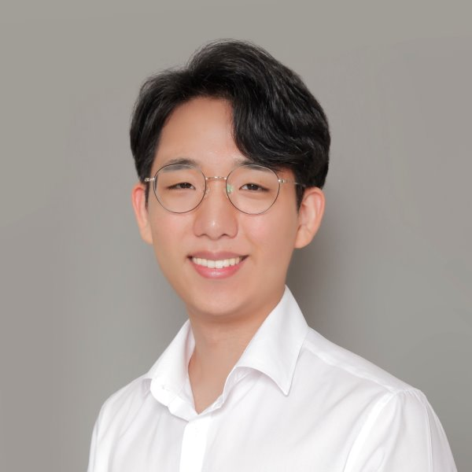

Yunchan Hwang Optical Coherence Tomography · Retinal Imaging
I'm a PhD candidate at MIT EECS working with Prof. Jim Fujimoto on advancing non-invasive ocular imaging to prevent blindness.
My research aims to prevent blindness. Using next-generation optical coherence tomography (OCT), I study the structural and vascular changes that mark retinal disease, non-invasively and at unprecedented resolution.
Specifically, I develop high-speed OCT angiography to quantify blood flow in the retina, and high-resolution OCT to capture structural changes in rods, cones, and their supporting cells. I apply these tools to the leading causes of vision loss across the lifespan: age-related macular degeneration in the elderly, diabetic retinopathy in working-age adults, and inherited retinal diseases in the young. I am particularly interested in identifying early biomarkers, in diabetes prior to clinical retinopathy and in the aging eye prior to AMD, with longer-term interest in the eye as a window into neurodegenerative disease.
I'll be defending my PhD in July 2026 and continuing as a postdoctoral researcher in the Fujimoto Lab while applying for faculty positions.
News
- Jul 2026 newDefending my PhD thesis at MIT EECS.
- Jun 2026 Giving a talk at the Lindau Nobel Laureate Meeting titled "Seeing past Blindness: the Eye as a Window to Human Health".
- Jun 2026 Awarded the IntRIS Best Member-in-Training Abstract Award, Los Angeles.
- May 2026 Two oral presentations at ARVO Annual Meeting and ARVO Imaging in the Eye, Denver.
- Apr 2026 Invited talk at the Center for Biomedical OCT Research, Massachusetts General Hospital.
- Mar 2026 First-author paper on choriocapillaris flow speed impairment in AMD published in Ophthalmology Science.
- Mar 2026 Awarded the ARVO Gerhard Zinser Memorial Travel Grant.
- Aug 2025 Awarded the MIT HEALS Graduate Fellowship.